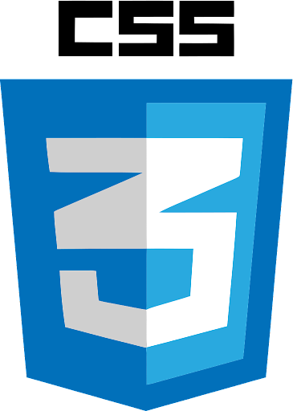
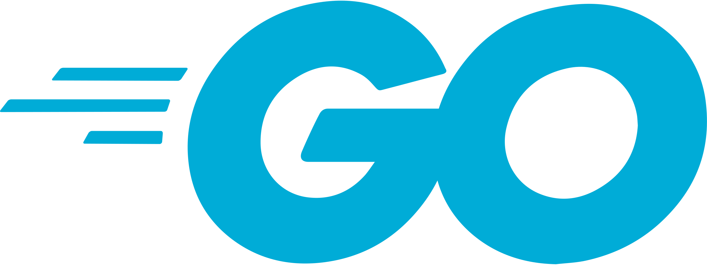

DIGITAL CURRICULUM
Space destined to introduce myself as a professional of software development, sharing my training, technologies learned, and creations made.

My name is João Pedro Lopes Guimarães, I'm graduating in Bachelor's Degree in Information Systems at Centro Universitário Geraldo di Biase (UGB), and also graduated in Computer Technician integrated to the High School at the Federal Institute of Rio de Janeiro - Campus Pine Forest (IFRJ). I started my journey in computing aiming at computer maintenance, however, at the first contact with programming, it was love at first sight. I always try to explore new ones technologies to improve myself as a professional and as the eternal student that I am.
-
Centro Universitário Geraldo Di Biase
Bachelor of Information Systems
In progress - 6th period
-
Instituto Federal do Rio de Janeiro - Campus Pinheiral
Computer Technician integrated into High School
Concluded

-

Alura
Independent courses
-
Udemy
Independent courses

-

HTML
Intermediate knowledge
-

CSS
Intermediate knowledge
-

JavaScript
Novice knowledge
-
Python
Novice knowledge

-

Golang
Novice knowledge
-
CSharp
Novice knowledge

-

MySQL
Novice knowledge
-
GitHub
Novice knowledge